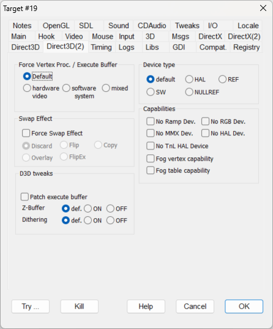

This option has a dual usage: it allows you to make experiments with different vertex processing settings for D3D8/9, or change the execute buffer creation flags.
When setting D3DCREATE_MIXED_VERTEXPROCESSING or D3DCREATE_SOFTWARE_VERTEXPROCESSING, it also trims down the D3DCREATE_PUREDEVICE flag that is incompatible with these two and causes a Direct3D error.
NOTE: Changing this option to software or mixed may help with rendering problems, such as in "Virtual Skipper 5".
|
Default |
||
|
hardware video |
FORCEHWVERTEXPROC |
This setting uses the video card (GPU). |
|
software system |
FORCESWVERTEXPROC |
This setting uses the system (CPU). Windows 10 Anniversary Update seems to default to software mode which can cause performance issues. |
|
mixed |
FORCEMXVERTEXPROC |
This setting forces the mixed mode for the vertex processing. |
|
Default |
||
|
hardware video |
FORCEHWVERTEXPROC |
The execute buffers are created in video memory. |
|
software system |
FORCESWVERTEXPROC |
The execute buffers are created in system memory. |
|
mixed |
FORCEMXVERTEXPROC |
The execute buffers are enabled for creation in both the video and system memory. |
Forces Swap Effect
FORCESWAPEFFECT
This experimental flag forces the selected SwapEffect mode during the CreateDevice/Reset methods. In some cases, it may improve compatibility or performance. You can choose from the following modes:
Discard
Flip
Copy
Overlay
FlipEx
|
No Ramp Device |
NORAMPDEVICE |
Suppresses the IID_IDirect3DRampDevice device type in device enumeration (see EnumDevices method). |
|
No RGB Device |
NORGBDEVICE |
Suppresses the IID_IDirect3DRGBDevice device type in device enumeration (see EnumDevices method). |
|
No MMX Device |
NOMMXDEVICE |
Suppresses the IID_IDirect3DMMXDevice device type in device enumeration (see EnumDevices method). |
|
No HAL Device |
NOHALDEVICE |
Suppresses the IID_IDirect3DHALDevice device type in device enumeration (see EnumDevices method). |
|
No TnL HAL Device |
NOTNLDEVICE |
Suppresses the IID_IDirect3DTnLHalDevice device type in device enumeration (see EnumDevices method). |
|
Fog vertex capability |
FOGVERTEXCAP |
Forces the usage of vertex fog by pretending that the device owns the D3DPRASTERCAPS_FOGVERTEX capability and misses the D3DPRASTERCAPS_FOGTABLE capability. |
|
Fog table capability |
FOGTABLECAP |
Forces the usage of table fog by pretending that the device owns the D3DPRASTERCAPS_FOGTABLE capability and misses the D3DPRASTERCAPS_FOGVERTEX capability. |
|
Patch execute buffer |
PATCHEXECUTEBUFFER |
This flag patches only the D3D version 1 ExecuteBuffer method. It adds an initial execute buffer to force ZBuffer initialization to the D3DCMP_LESSEQUAL value. |
|
Force ZBuffer ON |
FORCEZBUFFERON |
This flag patches only the D3D version 1 ExecuteBuffer method. Forces the D3DRENDERSTATE_ZENABLE specification to TRUE |
|
Force ZBuffer OFF |
FORCEZBUFFEROFF |
This flag patches only the D3D version 1 ExecuteBuffer method. Forces the D3DRENDERSTATE_ZENABLE specification to FALSE |
|
Force Dithering ON |
FORCEDITHERING |
This flag patches the D3D version 1 to 7 SetRenderState method. In the SetRenderState method, it forces the D3DRENDERSTATE_DITHERENABLE specification to TRUE |
|
Force Dithering OFF |
CLEARDITHERING |
This flag patches the D3D version 1 to 7 SetRenderState method. In the SetRenderState method, it forces the D3DRENDERSTATE_DITHERENABLE specification to FALSE |